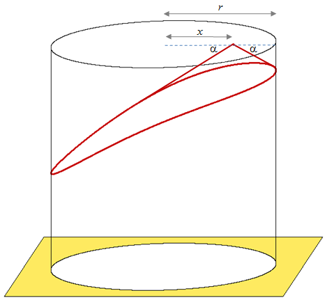

Fred the farmer arranges to have a new storage silo installed on his farm and having an obsession for all things square he is absolutely devastated when he discovers that it is circular. Quentin, the representative from the company that installed the silo, explains that they only manufacture cylindrical silos, but he points out that it is resting on a square base. Fred is not amused and insists that it is removed from his property.
Quick thinking Quentin explains that when granular materials are delivered from above a conical slope is formed and the natural angle made with the horizontal is called the angle of repose. For example if the angle of repose, $\alpha = 30$ degrees, and grain is delivered at the centre of the silo then a perfect cone will form towards the top of the cylinder. In the case of this silo, which has a diameter of $6\mathrm m$, the amount of space wasted would be approximately $32.648388556\mathrm{m^3}$. However, if grain is delivered at a point on the top which has a horizontal distance of $x$ metres from the centre then a cone with a strangely curved and sloping base is formed. He shows Fred a picture.

We shall let the amount of space wasted in cubic metres be given by $V(x)$. If $x = 1.114785284$, which happens to have three squared decimal places, then the amount of space wasted, $V(1.114785284) \approx 36$. Given the range of possible solutions to this problem there is exactly one other option: $V(2.511167869) \approx 49$. It would be like knowing that the square is king of the silo, sitting in splendid glory on top of your grain.
Fred's eyes light up with delight at this elegant resolution, but on closer inspection of Quentin's drawings and calculations his happiness turns to despondency once more. Fred points out to Quentin that it's the radius of the silo that is $6$ metres, not the diameter, and the angle of repose for his grain is $40$ degrees. However, if Quentin can find a set of solutions for this particular silo then he will be more than happy to keep it.
If Quick thinking Quentin is to satisfy frustratingly fussy Fred the farmer's appetite for all things square then determine the values of $x$ for all possible square space wastage options and calculate $\sum x$ correct to $9$ decimal places.
solve() → ?